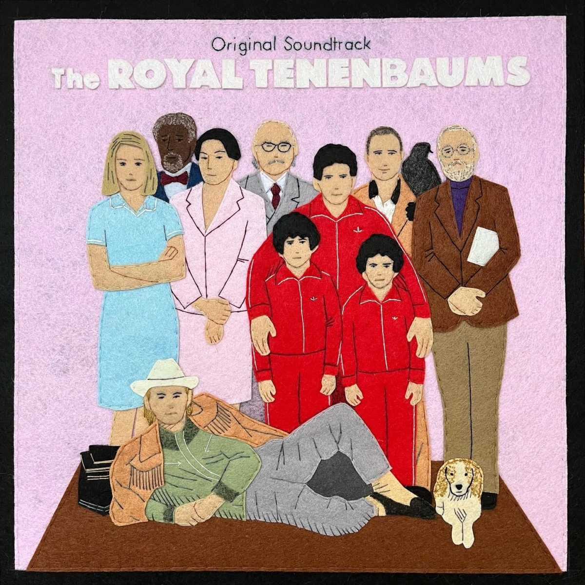
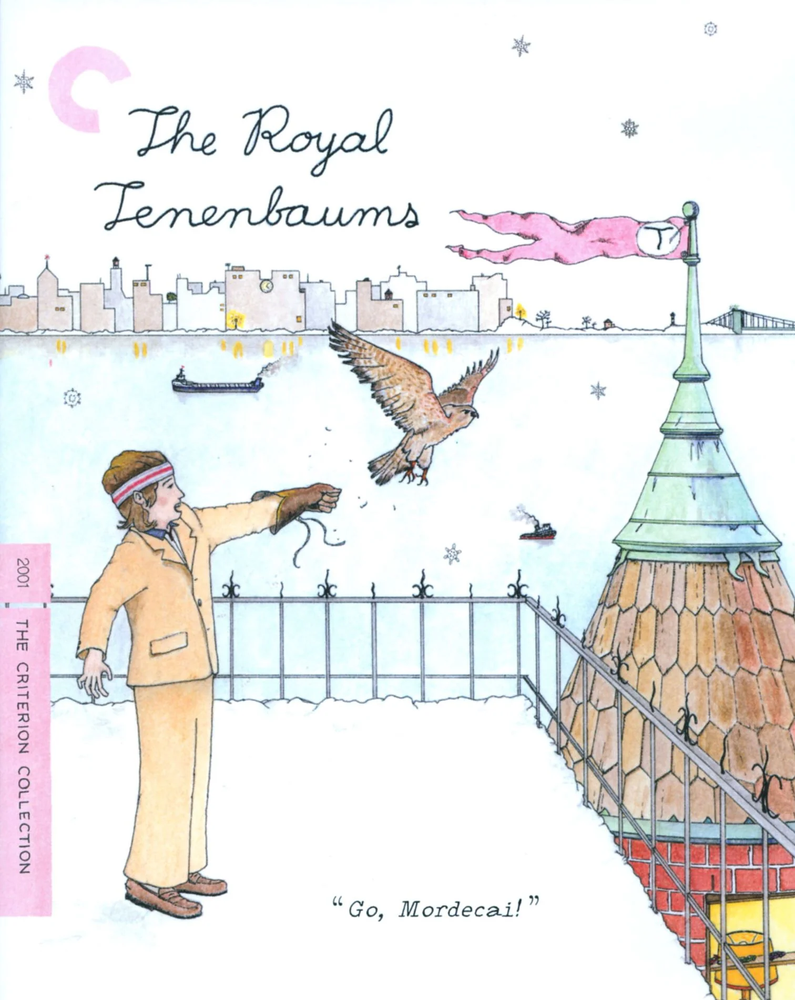

The Royal Tenenbaums
Published: June 2026
Wes Anderson’ın The Royal Tenenbaums filmi aslında baya melankolik bir komedi. Küçükken parlayan ama zamanla araya mesafe, hayal kırıklığı ve biraz da kabullenilmiş roller giren bir ailenin hikâyesi. Bir de şu küçük detaylar var, özellikle hayvanlar. Mortecai, Buckley… çok kısa anlar aslında ama bana garip şekilde çarpıyor. Oradaki hassasiyet, o kırılganlık hissi, bence direkt karakterlerin içine dokunuyor. Sanki kimse onlara tam olarak bakmıyor ama onlar da kendi dünyalarında bir şekilde var olmaya çalışıyorlar. O yüzden o hayvanların varlığı bana göre çok önemli.
Wes Anderson deyince benim yüzümde hep bir gülümseme oluşuyor. Renkler, yapılar, iç mimari, kostümler, karakterler… İlk bakışta biraz ruhsuz ve yapmacık gibi görünseler de alt metinde çok yoğun bir duygu ve ciddi bir derinlik var. Sanırım beni çeken şey de tam olarak bu. Bir noktadan sonra kendimi o karakterlerin içinde, onların çatlaklarında ya da eksik yanlarında görüyorum.
Film boyunca yine o kusursuzluk hissi çok baskın. Kamera açıları, kostümler, takımlardan eşofmanlara, gömleklerdeki düğme sayısından kitaplıktaki raf düzenine kadar her şey inanılmaz derecede düşünülmüş. Neredeyse hiçbir falso yok.

Mükemmellik ve Kusur
Ama diğer taraftan tam da bu düzenin içinde insanların iç dünyasındaki kırıkları, boşlukları ve zaafları çok net görüyoruz. Film bana göre o mekanik, pürüzsüz mükemmelliği araya serpiştirilmiş bazı detaylarla bilinçli olarak kırıyor. Bu da her şeyi daha gerçek yapıyor. Çünkü hayatta da zaten durum böyle değil mi?
Royal karakteri bunun en görünür örneklerinden biri. Vurdumduymazlığı, çerçevenin dışına taşan tavırları ve kurallara tam olarak ait olmayışı, filmin kusursuz estetiğiyle güzel bir tezat kuruyor. Filmin erkek karakterlerinin genel olarak biraz dışa yatkın, biraz da kusurlu oluşu bana kalırsa tesadüf değil.
Mükemmelliğin içindeki bu aykırılık, klişeyi de ironik bir şeye dönüştürüyor. Film biraz da bunu anlatıyor gibi geliyor bana.

Royal: İyi mi, Kötü mü?
Günün sonunda Royal’in kendini affettirmeye çalışması, yaptıklarını telafi etmek istemesi onu iyi biri yapar mı, emin değilim. Ya da geçmişte yaptıkları yüzünden hep kötü olarak mı kalmalı?
“Özgür ruh” deyip geçmek kolay ama gerçekten öyle mi? Hayatın tadını çıkarıyor olması ona karşı sempati duymamızı sağlıyor, evet. Ama bu aynı zamanda bir bencillik değil mi? Film bence burada çok net cevap vermek yerine bu gri alanda dolaşmayı tercih ediyor.
Etheline / Anne Figürü
Anne figürü de bana göre aynı şekilde çok katmanlı. Kendini çocuklarına adamış ya da bunu yaptığına inanmış bir anne var karşımızda. Bir yandan mesleğini ve hobilerini çok iyi şekilde icra ediyor, ama diğer yandan bazı şeyleri fazlasıyla yüzeysel geçiyor.
Mesela Margot’nun sigara içmesi ya da Richie ile Margot arasındaki duygusal hattı fark edememesi… Bunların hepsi burnunun dibinde yaşanırken haberdar olmaması, onu güçlü ve bağımsız kadın imajından biraz uzaklaştırıp daha kırılgan bir yere koyuyor.
Ama ilginç olan şu ki kimse ona doğrudan kızgın değil. Çünkü o da sadece bir insan. Bana göre toplumun bir kadına ve anneye biçtiği rolün biraz dışına taşmış bir karakter.
Karakterler ve Denge
Çocuklara gelince, bana göre hepsi anne ve babanın onlarda bıraktığı izlerin, sevgilerin ve travmaların bir toplamı gibi.
Chass daha çocukken büyümüş biri gibi ama aslında içten içe büyüyememiş. Richie tamamen birine bağlanma ya da birini takip etme eğiliminde. Margot ise dışarıdan güçlü, ne istediğini bilen biri gibi görünse de içinde eksik kalan bir şey var sanki. O yüzden hep bir arayışın içinde.
Belki bu eksikliktir, belki sadece merak ve keşif isteği. Kim bilir?
Günün sonunda yan karakterlerle beraber film kendini tamamlıyor ve Wes Anderson dünyasını izleyiciye daha derin bir şekilde aktarıyor. Pagoda’dan Henry’e, Eli’den Raleigh’e, Dudley’den Ari & Uzi’ye kadar herkes ana karakterleri beslediği kadar kendi hikâyesinden de küçük parçalar taşıyor.
Bu yüzden film sadece merkezdeki aile hikâyesinden ibaret kalmıyor; çevresindeki karakterlerle birlikte daha canlı, daha dengeli bir hâl alıyor. Bir nevi Ying Yang etkisi gibi.
Fazla uzatmadan şunu söyleyebilirim: Bu film hem estetik olarak çok doyurucu hem de duygusal olarak düşündüren bir deneyim. Benim için sadece izlenen bir film değil, aynı zamanda ruh hâliyle ve hayatın içindeki eksiklik hissiyle de kesişen bir şey oldu.
Kısacası, izlemesi gerçekten keyifli bir film.